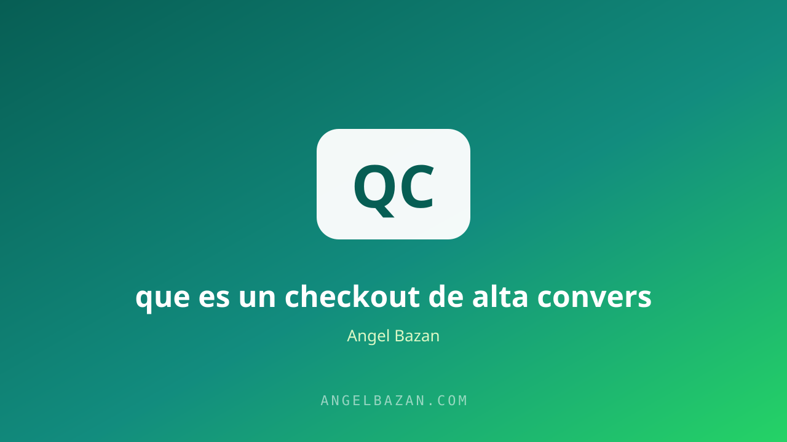

Checkout de alta conversión: qué es y cómo armarlo
Todo el esfuerzo en anuncios, landing y oferta se decide en los segundos finales. Así se arma un checkout que no deja escapar la venta.
En este artículo
El checkout es donde el embudo gana o pierde: todo el esfuerzo en anuncios, landing y oferta se decide en los segundos finales. Sin embargo, es la pieza más descuidada del proceso. Formularios largos, cargos inesperados, páginas lentas o una pasarela que no transmite confianza tiran abajo conversiones que ya estaban ganadas. El clic costoso llegó hasta ahí; el checkout decide si se convierte en dinero o en abandono.
Un checkout de alta conversión es rápido, simple y confiable. En esta guía verás qué lo compone, qué lo destruye y cómo armarlo paso a paso, incluyendo el order bump, el upsell y las señales de confianza que eliminan la duda final. Los ajustes aquí son pequeños en tamaño y enormes en resultado: subir la conversión del checkout unos puntos puede duplicar las ventas sin tocar los anuncios.

Qué es un checkout de alta conversión
Es el proceso final de compra diseñado para eliminar fricción: pocos pasos, carga rápida, opciones claras de pago y señales de seguridad. Su objetivo es que el cliente complete la compra en el menor tiempo y con la menor duda posible. Cada campo extra, cada pantalla adicional y cada segundo de carga resta conversión. La landing page genera la decisión; el checkout la ejecuta. Si la landing es la argumentación, el checkout es la firma, y las firmas se hacen cortas y fáciles.
Por qué se pierden ventas en el checkout
- Costos ocultos que aparecen en el último paso.
- Formularios con campos innecesarios que piden más de lo que aportan.
- Página lenta o que se cae justo en el momento clave.
- Sin opciones de pago locales: Yape, Plin, tarjeta o link de pago.
- Dudas sobre seguridad del cobro y de la entrega.
El abandono de carrito no es un misterio: es diseño. Cada una de estas causas tiene solución técnica y medible. El primer paso para armar un buen checkout es eliminar estas cinco fugas, porque cualquier optimización posterior funciona mejor sobre una base sin fugas.
Los elementos de un checkout ganador
- Una sola columna, sin distracciones: ni menús ni enlaces que compitan.
- Campos solo esenciales: nombre, correo y pago, nada más.
- Resumen visible del pedido: el cliente ve qué paga antes de pagar.
- Precio final transparente desde el inicio: sin sorpresas al final.
- Pasarela con pagos locales: Yape, Plin y tarjeta cubren el mercado.
- Garantía visible cerca del botón: la última duda resuelta in situ.
Simplicidad es la regla: cada elemento que no ayuda a pagar, estorba. El checkout ideal cabe en una pantalla y se completa en menos de un minuto. La estructura del embudo de ventas marca dónde entra el checkout, y esta lista marca cómo se ve.
Order bump: la venta extra sin esfuerzo
El order bump es una oferta de bajo precio marcada por defecto en el checkout: "agrega la plantilla por 9 soles" o "asegura tu acceso por 5 soles". Como el cliente ya decidió comprar, aceptar un pequeño extra requiere cero esfuerzo y eleva el ticket promedio de forma notable. Es el truco más simple de la conversión: no vende a nadie nuevo, pero multiplica el valor de cada compra. Las variantes y el orden correcto están explicados en order bump, upsell y downsell.
Upsell y downsell después de pagar
Después de la compra, la resistencia es mínima: es el mejor momento para ofrecer el upsell (la versión superior con un extra) y el downsell (una versión accesible para quien dice no al upsell). La página de gracias se convierte así en un mini embudo de ingresos que no gasta un sol en tráfico. La lógica es la misma de la oferta irresistible: el valor se apila, y el momento de máxima intención es después del pago, no antes.
La confianza decide el último clic
El checkout debe transmitir que el cobro es seguro y la entrega es real: candado, sellos de la pasarela, garantía visible, testimonios y un contacto claro. En Latinoamérica, las pasarelas locales y la opción de resolver dudas por WhatsApp convierten más que cualquier sello internacional. La garantía no es un gasto: es la herramienta que elimina la última duda y permite que el botón se haga clic. Si tu negocio cierra por mensajes, el embudo de WhatsApp complementa al checkout con el toque humano que decide ventas dudosas.
Mide el checkout como un embudo
Mide cada paso: de página a checkout, de checkout a pago iniciado, de pago iniciado a compra completada. Un abandono alto entre el segundo y el tercer paso señala fricción específica; un abandono alto en el primero señala problemas de oferta. Las pruebas A/B en el botón, la garantía y el order bump revelan rápido qué mueve la conversión. El analizador de página de ventas te muestra dónde se escapa el dinero, y el ROAS vs ROI confirma si el esfuerzo vale. Sin medición, cada cambio es una opinión.
Preguntas frecuentes
¿Cuál es la mejor pasarela de pago para empezar? La que cubra los pagos que tu mercado usa: en Latinoamérica, una que integre Yape, Plin y tarjeta. Empezar con una pasarela simple y confiable supera a la pasarela "completa" que nunca configuras.
¿El order bump siempre funciona? En la mayoría de los productos digitales sí, siempre que el extra sea pequeño, relevante y con valor obvio. Si el bump no convierte, prueba otro producto o elimina el preseleccionado: a veces molesta más de lo que aporta.
¿Qué hago si la tasa de abandono es alta? Divide el embudo en pasos y encuentra el punto exacto de fuga: si es el formulario, elimina campos; si es el pago, suma métodos locales; si es la confianza, acerca la garantía al botón. Cada fuga tiene su cura.

Angel Bazán
Especialista en funnels, Meta Ads y WhatsApp + IA. Ayudo a negocios a vender más combinando tráfico pagado con conversaciones automatizadas.
Conoce más sobre mí →Aprende a crear y vender productos digitales con Meta Ads, WhatsApp e IA
Clases en vivo, estrategias y recursos para construir tu sistema desde cero. 🚀
Únete gratis al grupo